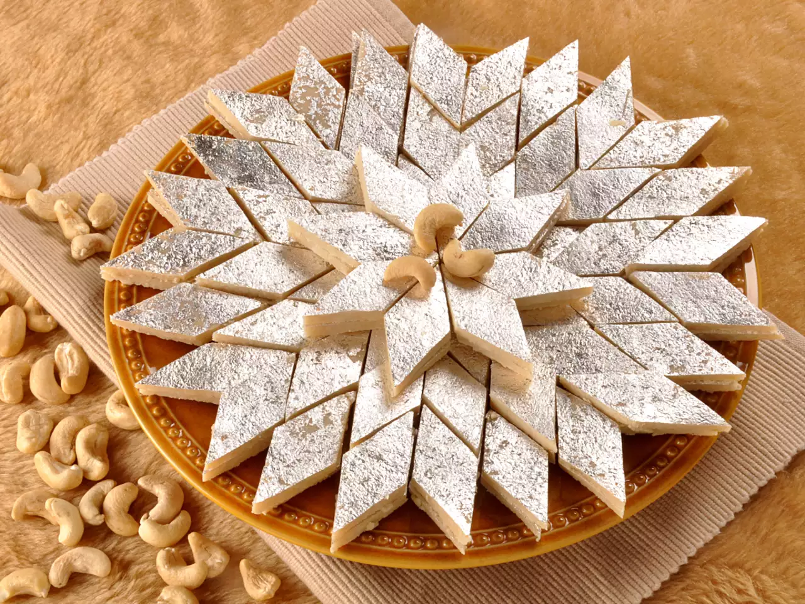

Gulab Jamun
Ingredients
- 1/2 cup maida1 tsp milk
- For Sugar Syrup:2 cups sugar5 cups water 1 tsp
- milk1/4 tsp
- cardamom seeds1/2 tsp
- saffron1/2 tsp
- cardamom powderFor Gulab Jamun Balls:1
- 1/2 cups khoya
- grated1/2 tsp baking soda
Recipe
- Take the grated Khoya in a medium size deep bowl.
- Add baking soda and maida. Combine them thoroughly but gently using a spoon.
- Add a teaspoon of milk to it and knead all of them together to make a smooth and soft dough. Add another teaspoon of milk if required
- Make sure that the dough is a bit softer to avoid cracking of ball while deep frying.
- Divide the dough into equal parts and make smooth surfaced balls out of it.
- Now heat ghee in a pan over medium flame and add the Jamun balls to deep-fry them. Cook evenly until it becomes golden brown.
- Make sure that you do not cook on high flame otherwise the balls will burn.
- ow drain and let them cool for few minutes.
- Then immerse the gulab jamuns in the warm sugar syrup for at least 30 minutes. It increases in size when it soaks the sugar syrup.
- Hot and tasty sweet dish is ready to serve.

Kaju Barfi
Ingredient
Recipe
- Place 1 cup cashews (kaju) in a dry grinder or coffee grinder or blender. I usually keep cashews at room temperature. Hence the cashews are dry.
- Grind the kaju to a smooth powder, making sure you don’t over do the grinding process as fat should not release from the cashews.
- Combine ½ cup sugar and 5 tablespoons water in a thick bottomed pan (or kadai or a non-stick pan).
- Keep on low flame and let the sugar dissolve in the water. There is no consistency in the sugar syrup like one string or two string. Simply let the sugar dissolve in the water and then proceed with the next step.
- When the sugar completely dissolves in the water, add the cashew powder.
- Stir and keep on stirring non-stop on a low flame. If there are lumps then break the lumps as you stir and continue to stir. This consistent stirring is the key for a smooth and even kaju katli dough.
- The mixture will thicken and start coming together to form a very soft dough. Then it is time to remove the whole lump of the mixture from the pan and place it on a work surface. This process of making the kaju katli dough took me exactly 8 minutes on a low flame.
- Put the entire cashew dough on a work surface. Add 1 teaspoon rose petals (or 1 teaspoon rose water or 8 to 9 strands of saffron) and 1 tablespoon ghee or coconut oil. The addition of rose petals and coconut oil or ghee are optional.
- Knead the dough lightly, flatten it and place it on a greased plate or tray. Don’t overdo kneading as this will release fat from the cashews. The grainy texture in the dough goes away as you knead it. Remember the dough should be hot while kneading.
- You can also place it on a large piece of parchment or butter paper. The cashew dough should still be quite warm when you start rolling it. As it cools it will harden more and then becomes difficult to roll, so work quickly!

<